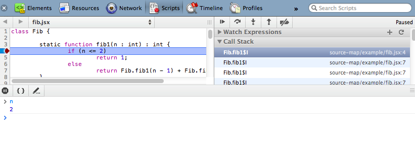

SourceMap makes debugging JSX easy; you will see the original JSX source code instead of compiled JavaScript source code in the debugger. Symbol name mapping is not supported completely, though.
Currently Chrome 18+ supports SourceMap. Open the JavaScript Console and tern "Enable source mapps" on in the settings.
Debugging JSX in Chrome JavaScript Console:
